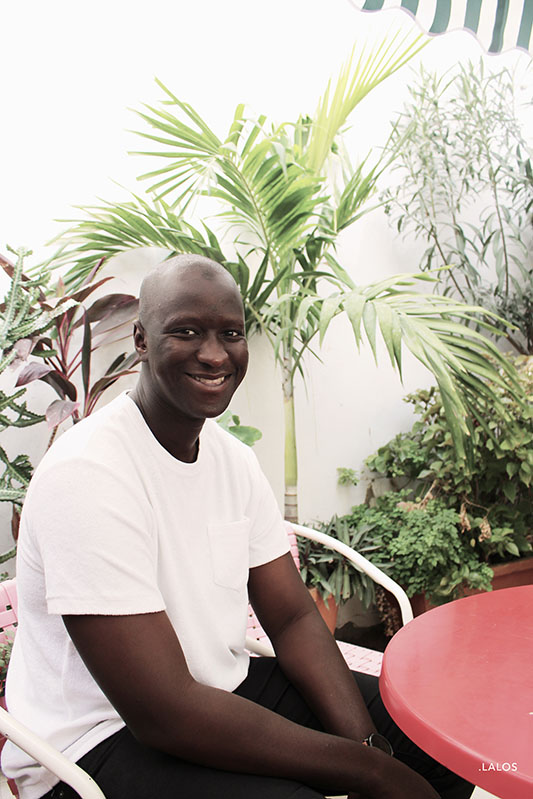

Last December, I had the opportunity to participate in the organizing team of Africa Start-Up Tour competition in Dakar, Senegal. I met one of the speakers there, Bamba Lô who is the founder of Pap’s, a Dakar-born delivery service mobile App. I found his mobile application so very relevant to the needs of Dakar’s inhabitants that I decided to interview him ! Read it below
 Bamba Lô, créateur de Paps
Me: “Hey Bamba, so first I would like to know why did you decide to create this geolocation-based service mobile app?”
Bamba: “Actually, this idea came naturally; in August 2015, I had a call center company located in Paris, in Dakar and in Bizair (Tunisia). One of our clients proposed a new deal to us: to sell local mobile bundles in Dakar. As it was an entirely new business here, we decided to jump onboard straight away!
Right from the first months, the results were very encouraging: we made 1K sales on average per month. However, the collection of revenue wasn’t so good: it accounted for 20% of sales…! Thus, we decided to complete our service: not only to provide the mobile offer but also to provide a delivery service.
We began with a few customers and one thing led to another, some customers began to ask us to do all kinds of deliveries: “Please could you go and get me my daughter’s birthday gift?”, “Could you go and get me a pizza? The game is about to start soon!” So on and so forth…
THAT! Is how we officially started our delivery service offering.
Not too long after that, Orange (the telecommunications company) came to us as they were looking for a back-up provider to complete their VIP janitorial offering; we agreed to take the risk and accept their proposition!
Within a few months, the results were encouraging thanks to the quality of our service: in fact, our deliverymen always have change (most of our customers pay in cash here), they are always smiling and polite: in other words, they were just applying the basis of politeness which is enough here to make the difference.
Last march, in order to optimize the partnership, we decided to create a mobile app.”
M- « Could you tell me more about how the “customer satisfaction” principal is applied here in Dakar? In fact, it is a very Western principal which is quite recent in the service industry in most of West African countries isn't it?
B- That is true. Most of Dakar-based delivery service companies don’t apply this principle of “customer satisfaction”. That is why most consumers aren’t loyal to a brand and keep looking for the competitor.
The key is to apply in the professional sphere, what exists in private one: for example, we are used to respecting the elderly, being generous and united with our fellows. At Pap’s, we decided to apply these values when we do our deliveries to create loyalty to our service and so to make a difference; it seems to work !”
M- “Regarding the geolocation, I’ve noticed that African cities overall are badly referenced on online maps; how did you manage to deal with this issue? “
B- “We decided to refer the main meeting spots depending on professionals’ habits, individuals ‘ones, residential zones etc. Then, we split Dakar in 3 main zones: center, Sacré-coeur-liberté 6-Mermoz, Almadies-Gorée. To be efficient, each deliveryman has his dedicated delivery zone; Thus, when we receive an order, it is only the closest deliveryman who receives a push notification.”
A deliveryman receiving a push notification on his smartphone.
M- “Are you already profitable?”
B- “Currently, we are going through a hyper-growth phase: with just 1 deliveryman, we moved from 42 deliveries the 1st month of activity, to 143 deliveries the 2nd month and 322 deliveries in the 3rd one. Today, we complete on average, 10 deliveries per day per deliveryman. So, our main challenge for sure is to increase our resources in order to meet our expanding customer requests but first, to maintain the quality of our service.“
M- I’ve noticed that Dakar is a religious city; Is it a constraint to consider when running a digital business?”
B- “Not at all (Laugh). It’s just a different timeline to consider. When it is prayer time, it is the same for all so, the customers and our deliverymen do their prayers. Once it’s over, the customers can place his order and the deliveryman is operational and ready to restart his deliveries.”
M-” Do you think that digital is a viable solution for the economic development of emerging countries?”
B-” I’m convinced that it is! The power of digital is the speed of its deployment in people’s life. Each great digital solution can go viral in a few seconds. Look at social networks for example. Look at how fast they have been adopted here!
Thus, I’m convinced that it is the better way to meet local needs. Look at our mobile application; we are just offering a classic delivery service. Thanks to digital we’ve created an app which meet Dakar’s inhabitants needs. In addition to that, it brings a qualitative service, a high level of requirements which was quite hard to put in place before digital era.”
M – “Thanks a lot for this interesting interview!”
If you’re looking for more information regarding Paps, one direction to follow: http://www.paps-dev.com/
Elodie WANANG